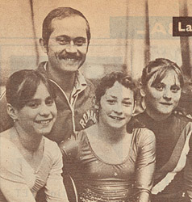

Mihaela Stanulet (ROM)
1982 Balkan AA Champion
1983 European B
Bronze Medalist

Stanulet (right) poses with teammates
Lavinia Agache and Ecaterina Szabo
and coach Adrian Goreac in 1983.
Medal Total
- Olympic Games: 1 Gold
- World Championships: 1
Silver
- European Championships: 1
Bronze
Mihaela was born on July 5, 1966
in Sibiu. She trained at the national team center in Deva from 1980 to 1985. After leaving competitive gymnastics in 1987, she became a coach to both girls and boys at her first
gym in Sibiu. In 2020, she became the first athlete to receive the title of Honorary Citizen of Sibiu for her impressive sporting career.
Competition Results
- 1978
ROM Champioships (category III): 2nd AA
1979
- Athens International: 6th AA, 3rd V, 5th UB, 5th B
Jr. Balkan Championships: 1st Team, 6th AA
Jr. ROM-BUL Dual Meet: 1st Team, 1st AA
-
- 1980
- ROM-BUL Dual Meet: 1st Team, 1st AA
- 1981
- American Cup: 5th AA
- Balkan Championships: 1st Team, 10th AA
- International Championships of Romania: 3rd AA
- Intl. Mixed Pairs: 6th Team
ITA-ROM Dual Meet: 1st Team, 3rd AA
- World Championships: 4th Team, 37th AA (prelims)
-
- 1982
- Balkan Championships: 1st Team, 1st AA, 1st B, 3rd V,
3rd FX, 4th UB
- Catania Cup: 3rd AA
- International Championships of Romania: 2nd AA, 2nd V, 2nd UB
ROM Championships: 2nd AA, 2nd V
ROM-GBR Dual Meet: 1st Team, 2nd AA
NED-ROM Dual Meet: 1st Team, 2nd AA
- World Cup: 6th AA, 4th V, 4th B, 7th FX
-
- 1983
- European Championships: 12th AA, 3rd B
- ESP-ROM Dual Meet: 1st Team, 1st AA
FRG-ROM Dual Meet: 1st Team, 3rd AA
- GBR-ROM Dual Meet: 1st Team, 4th AA
- HOL-ROM Dual Meet: 1st Team, 3rd AA
- International Championships of Romania: 3rd AA
- Pre-Olympics: 8th AA, 4th FX, 5th V
- ROM Championships: 4th AA
World Championships: 2nd Team, 15th AA
(prelims)
-
- 1984
- International Championships of Romania: 3rd AA, 2nd V, 2nd B, 2nd FX
- Olympic Games: 1st Team, 4th UB
- Romanian Cup: 3rd AA
This page was last updated on April 01, 2021.
© Gymn Forum